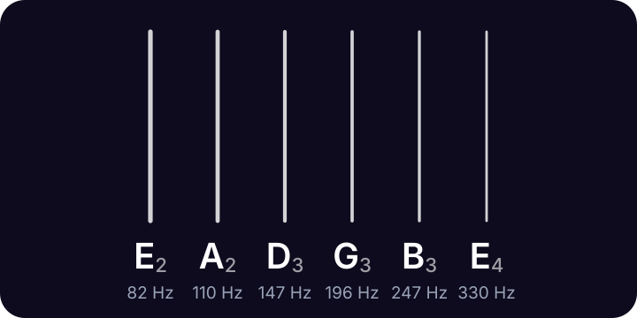

lodestone
lodestone
Standard guitar tuning
Standard guitar tuning is E A D G B E, from the thickest string (the 6th, nearest your face) to the thinnest (the 1st).
Lodestone for iPhone shows these strings too, with the one you're tuning lit up. 99¢, once.
Standard guitar tuning notes and frequencies

| String | Note | Frequency |
|---|---|---|
| 6th | E2 | 82.41 Hz |
| 5th | A2 | 110.00 Hz |
| 4th | D3 | 146.83 Hz |
| 3rd | G3 | 196.00 Hz |
| 2nd | B3 | 246.94 Hz |
| 1st | E4 | 329.63 Hz |
Frequencies use A4 = 440 Hz. Strings are numbered from the thinnest.
The two E strings are the same note two octaves apart: the low E rings at 82.41 Hz and the high E at 329.63 Hz. A handy way to remember the order is Eddie Ate Dynamite, Good Bye Eddie.
Tap any string above to hear its note, or turn on the mic and play. The string you're tuning lights up, and it glows brighter as you get close.
Tuning the strings to each other
- Tune the low E first, with the mic or by ear against the tone above.
- Press the low E at the 5th fret. That's an A: tune the open A string to match.
- Press the A string at the 5th fret and tune the open D to it. Do the same from D to G.
- Press the G string at the 4th fret (the one exception) and tune the open B to it.
- Press the B string at the 5th fret and tune the high E to match.
Questions
What are the six guitar string notes?
E, A, D, G, B and E, from the thickest string to the thinnest. In scientific pitch they're E2, A2, D3, G3, B3 and E4.
Which string is the 6th string?
The thickest one, nearest your face when you play. Strings are numbered from the thinnest (1st, high E) to the thickest (6th, low E).
Why are there two E strings?
The low E and the high E are the same note two octaves apart (82.41 Hz and 329.63 Hz), so a lot of chords ring out with the root on the top and bottom.
What does A440 mean?
It's the reference pitch: the A above middle C vibrates at 440 Hz, and every other note is tuned relative to it. Lodestone uses A440.
More tunings
- Drop D D A D G B E
- Half step down E♭ A♭ D♭ G♭ B♭ E♭
- D standard D G C F A D
- Drop C C G C F A D
- DADGAD D A D G A D
- Open G D G D G B D
- Open D D A D F♯ A D
- Bass tuner E A D G
- Ukulele tuner G C E A
- Violin tuner G D A E
Lodestone for iPhone
Open Lodestone and play. It's already listening. Pick your instrument to see its strings, with the one you're tuning lit up. 99¢, once. No ads, no accounts, no subscription.